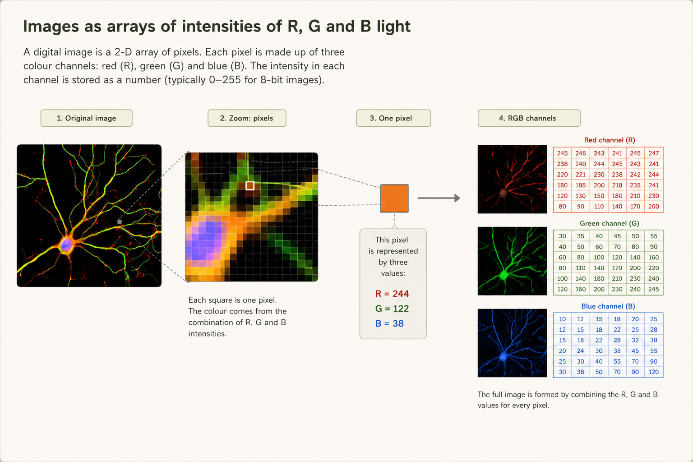
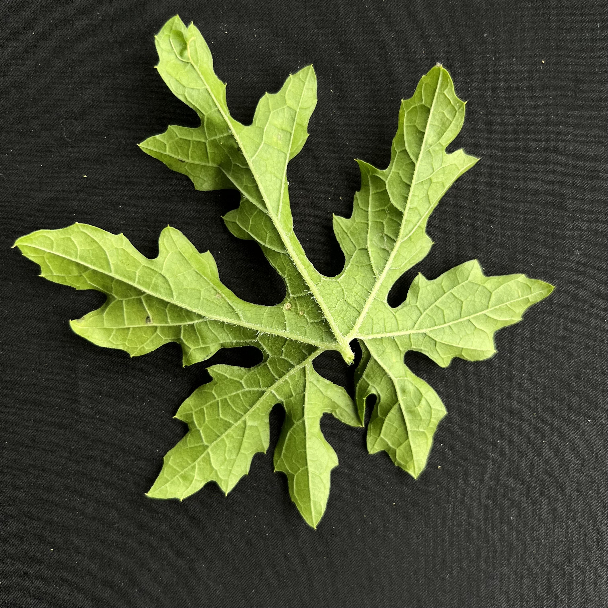

Learning Objectives
Introduction
Images comprise one of the most universal and abundant formats in which data can exist, irrespective of discipline, and are especially common in the biological and medical sciences. From microscopy and histology image, through to clinical scans and field photography, images often serve as a rich source of quantitative information as well as visual evidence to support a research project or study.
As datasets can quickly grow in both size and complexity, the ability to read, inspect, analyse and manipulate image data is one of the most practical and widely used applications of Python. In this lesson, we will explore how images are represented, handled and analysed in Python, deconstructing them into their numerical components; a representation which allows an image to be studied as data rather than solely viewing them as pictures.
Images in Python
In Python, an image can be understood as a numerical array in which each value represents the intensity or colour information of a pixel. Rather than being treated simply as a picture for visual inspection, an image is stored as structured data that can be indexed, measured, transformed, and analysed mathematically. A grayscale image is typically represented as a two-dimensional array, where each position corresponds to one pixel intensity, while a colour image is usually represented as a three-dimensional array, in which the third dimension stores separate colour channels such as red, green, and blue. From this Pythonic perspective, an image is therefore a grid of numerical values arranged in space, making it both a visual object and a dataset that can be explored computationally.
Images as NumPy arrays
The first step in analysing images is to understand them as objects containing raw, constituent data. In Python, this data is typically stored as a NumPy array, where each value corresponds to the intensity or colour information of a single pixel. Each pixel can therefore be located by its position in the array, and in a colour image, by its position within a specific colour channel.
A pixel - or picture element - is the smallest individual unit of a digital image. In a raster image (an image made up of a grid of individual pixels), each pixel stores a numerical value that represents brightness in a greyscale image, or colour information in a colour image. When thousands or millions of pixels are arranged in a grid, they combine to form the complete image we see on screen.
Representing images in this way allows us to inspect their structure, measure their dimensions and process them efficiently using familiar numerical methods. This means that an image is not only something we can display, but also a dataset that we can analyse, transform and manipulate computationally. Once an image has been loaded as an array, we can crop it, measure it, filter it or modify it using ordinary NumPy operations.
The two most common types of image we encounter are greyscale and colour.
- In a greyscale image, each pixel stores a single intensity value representing brightness, ranging from black through shades of grey to white. Because only one value is needed for each pixel, greyscale images are typically stored as two-dimensional arrays.
- In a colour image, each pixel usually stores multiple values for different colour channels, most commonly red, green and blue (RGB). Colour images are therefore typically stored as three-dimensional arrays, where the first two dimensions describe the image height and width, and the third dimension stores the colour-channel values.
- When checking the
.shapeattribute, greyscale images return a tuple of two values. An image of resolution 500 x 500 pixels, will simply have a shape of(500, 500). - When checking the
.shapeattribute, colour images return a tuple of three values. An RGB image of resolution 500 x 500 pixels, will simply have a shape of(500, 500, 3). If the image has a transparency layer, it is RGBA, with the alpha layer showing up as a fourth channel in dimension 3. The given example as RGBA would have a shape of(500, 500, 4).
Another important feature of an image array is its data type (dtype), which tells us how the pixel values are stored in memory. Many image files are represented using the uint8 data type, meaning that each value is stored as an unsigned 8-bit integer between 0 and 255. In a greyscale image, these values typically run from black (0) to white (255), while in a colour image they represent the intensity of each individual colour channel.
It is also worth noting that different Python libraries do not always store colour channels in exactly the same order. While RGB is very common, some libraries may use alternative conventions, so it is always good practice to check the shape and structure of an image array after loading it.
Different image libraries may return arrays with different channel orders, data types, or intensity ranges. For that reason, it is good practice to inspect shape, ndim, and dtype every time you load a new image.
You may sometimes encounter colour images with a 4th channel. These are RGBA images, where the fourth channel is an alpha channel, containing transparency information. If you have ever encountered PNGs where a logo, for example, has a transparent background, it will be RGBA, with the transparency component determined by this fourth colour channel. In such cases, the shape of the array is often (height, width, 4) rather than (height, width, 3).

The figure above conceptualises how this image of a dendrite is composed, when broken down into its constituent pixels, and colour channels. The 3-dimensional NumPy array that comprises this image, therefore, has shape = (height, width, channels).
The ratio of red, green and blue intensities at any one pixel, therefore, superimpose over one another, combining into the final colour that we perceive when looking at a given pixel.
Reading image files into Python
Before we can inspect or analyse an image in Python, we first need to be able to read the image file into memory, as an array. In this lesson, we will focus on using the imread function from the matplotlib.image submodule; a common and convenient function for loading image data directly into a NumPy-compatible format.
That is not to say that there aren't other methods for doing this. For instance, you may encounter Image.open() from the Pillow library, imageio.imread() or even cv2.imread() from OpenCV. But imread is a good starting point, as it keeps the process simple and closely aligned with array-based image analysis. We will use it consistently throughout this course, going forward, whenever we are dealing with image files.
Let's start with this image of a bitter gourd leaf.

We can make use of the imread function to load in the file, and check its type:
While our example file here is a .JPG file, imread() function can actually read a wide range of common image file formats, including JPEG (.jpg, .jpeg), PNG (.png), TIFF (.tif, .tiff), BMP (.bmp), GIF (.gif) and many others, automatically decoding the file into a NumPy array for further analysis.
Now that the image has been loaded as a NumPy array, we can inspect some of its properties.
It is important to understand the bit-depth and range of intensities that contribute to greyscale and colour images.
- Greyscale images: these have one intensity value per pixel. In an 8-bit image, this is typically stored as
uint8with values from0(black) to255(white). In some image-processing workflows, greyscale images may instead be represented as floating-point values from0.0to1.0. - Colour images: these usually have three channels per pixel, commonly red, green, and blue (RGB). In an 8-bit colour image, each channel is typically stored as
uint8with values from0to255, so each pixel is described by three intensity values rather than one.
| Image type | Channels | Common dtypes / bit depths | Typical intensity scale | Transparency | NumPy array shape |
|---|---|---|---|---|---|
| Greyscale | 1 | uint8 (8-bit), sometimes uint16 or float32 |
0-255 for uint8, 0.0-1.0 for normalised floats |
No | (height, width) |
| RGB | 3 | uint8 (8-bit per channel), sometimes uint16 or float32 |
Each channel usually 0-255 or 0.0-1.0 |
No | (height, width, 3) |
| RGBA | 4 | uint8 (8-bit per channel), sometimes uint16 or float32 |
RGB channels as above; alpha usually 0-255 or 0.0-1.0 |
Yes, alpha channel | (height, width, 4) |
When you encounter the acronym uint in data types such as uint8, it stands for unsigned integer. The number that follows specifies the number of bits used to store each value. For example, uint8 represents an unsigned 8-bit integer, meaning it can store whole numbers from 0 to 255: a common format in imaging.
We can also inspect the range of values stored in the array, and access individual pixels or small regions using ordinary NumPy indexing.
In an RGB image, indexing a single pixel returns three values, one for each colour channel. In a greyscale image, the same kind of lookup would usually return just one intensity value.
The way this NumPy array is structured can be visualised as a 3 × 3 grid of pixels, as shown in the table, below. The outer list corresponds to the image rows, each inner list corresponds to the columns, each being a three-element array ([R, G, B]) containing the Red, Green and Blue values describing the colour of a single pixel.
| Column 1 | Column 2 | Column 3 | |
|---|---|---|---|
| Row 1 | R G B [62, 63, 58] |
R G B [38, 39, 34] |
R G B [10, 11, 6] |
| Row 2 | R G B [72, 73, 68] |
R G B [47, 48, 43] |
R G B [14, 15, 10] |
| Row 3 | R G B [67, 68, 63] |
R G B [51, 52, 47] |
R G B [22, 23, 18] |
Displaying images using matplotlib
Now that we have read the image in as a NumPy array, we can display it graphically using Matplotlib. An oft-used approach is employing the imshow function within matplotlib's pyplot submodule, which renders the array as an image. In the code below, we use plt.axis('off') to hide axes when we only want to view the image itself. If we left this out, the numbering on x and y axes would correspond to the dimensions of the image, in pixels.
As with any array, you can slice into an image in order to focus on particular zones or areas of interest. This can, for instance, allow the inspection local detail, filling the figure canvas with a cropped region of the image in question.
With colour images, we typically slice across the first two dimensions to select rows and columns of pixels, while the third dimension stores the colour channels, and is kept, in tact.
When cropping a colour image, the slice usually selects rows and columns while keeping the full set of channels. For example, image[500:1200, 800:1500] returns a rectangular RGB crop with shape (height, width, 3).
Using subplots - with which you will be familiar from previous lessons in this module - you can easily create tiled figures, displaying different regions of the image
1.
Let's practice loading a new image, checking its attributes and taking a crop of a specific feature.
- Use
imreadto load the imagehealthy_1.JPGlocated in the./data/directory, and store it in a variable calledleaf_2. - Print the shape and data type of the loaded image.
- Create a cropped version of this image, selecting rows 500 to 1700 and columns 1000 to 2000, and store it in a variable called
leaf_2_crop. - Display
leaf_2_cropusing Matplotlib'simshowfunction, making sure to hide the axes.
Summary
In this section of the lesson, we introduced the concept of digital images as numerical data stored in NumPy arrays, showing how Python can treat images both as images and as structured datasets: which, like any other, can be inspected, indexed, sliced and displayed. The lesson briefly introduced the difference between greyscale, RGB and RGBA images, including characteristics such as typical channel structure, data types and intensity ranges associated with each, highlighting that many images are stored as uint8 values while some workflows use normalised floating-point data. We then learned how to read in a Python image using the imread function. Lastly, we accessed individual pixels and small regions through standard NumPy indexing, created a crop by slicing the array, and showed how to display images in a graphical format, using Matplotlib with imshow function.